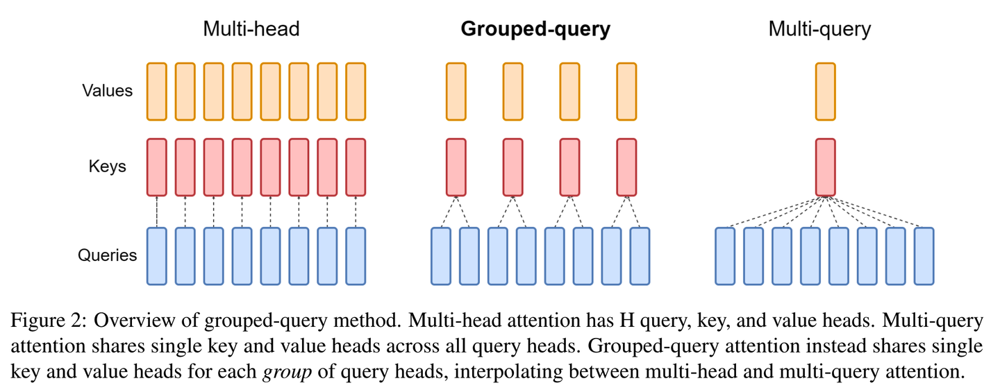

从 MHA 到 GQA：LLM 注意力机制的 KV 头复用
为什么要关心 MHA、MQA、GQA
Transformer 的 Attention 最早通常使用 MHA，也就是 Multi-Head Attention。每个注意力头都有自己独立的 Query、Key、Value 投影，表达能力强，也最容易理解。
但到了 LLM 推理阶段，问题会变得很现实：生成每个 token 时，模型都需要读取前面所有 token 的 Key 和 Value。上下文越长，KV cache 占用越大，访存压力也越高。
MQA 和 GQA 的核心动机就是减少 KV cache。它们不改变 Query 头的数量，而是减少 Key、Value 头的数量，让多个 Query 头共享同一组 Key、Value。
三者的直观关系

可以先用一句话建立直觉：
- MHA：每个 Query 头都有自己的 Key、Value 头。
- MQA：所有 Query 头共享同一组 Key、Value 头。
- GQA：把 Query 头分组，每组共享一组 Key、Value 头。
如果总共有 H 个 Query 头，G 个 KV 组：
G = H时，GQA 等价于 MHA。G = 1时，GQA 等价于 MQA。1 < G < H时，GQA 介于 MHA 和 MQA 之间。
所以 GQA 可以看成 MHA 和 MQA 之间的折中方案：它比 MQA 保留更多 Key、Value 表达能力，又比 MHA 更节省推理显存和带宽。
MHA：标准多头注意力
MHA 中，Query、Key、Value 都会被切成多个头。假设隐藏维度是 hidden_size，注意力头数是 num_heads，那么每个头的维度是：
head_dim = hidden_size / num_heads
投影后的形状通常是：
Q: [batch, num_heads, seq_len, head_dim]
K: [batch, num_heads, seq_len, head_dim]
V: [batch, num_heads, seq_len, head_dim]
每个头独立计算注意力，再把所有头的输出拼接起来，经过输出投影回到原始隐藏维度。
MHA 的优点是表达能力强，缺点是 KV cache 很大。因为每一层、每一个 token、每一个头都要保存 Key 和 Value。
MQA：所有 Query 头共享一组 KV
MQA 保留多个 Query 头，但 Key 和 Value 只有一组。
形状会变成：
Q: [batch, num_heads, seq_len, head_dim]
K: [batch, 1, seq_len, head_dim]
V: [batch, 1, seq_len, head_dim]
计算注意力时，Key 和 Value 会通过广播被多个 Query 头共享。这样做可以显著减少 KV cache，因为原来需要保存 num_heads 份 Key、Value，现在只需要保存 1 份。
MQA 的代价是表达能力可能下降。所有 Query 头看的是同一套 Key、Value，模型在不同头之间可使用的信息会更少。
GQA：更常用的折中方案
GQA 把 Query 头分成若干组，每组共享一组 Key、Value。
如果 num_heads = 32，num_kv_heads = 8，那么每 4 个 Query 头共享 1 个 KV 头：
32 个 Query 头
8 个 KV 头
每个 KV 头服务 4 个 Query 头
GQA 的形状是：
Q: [batch, num_heads, seq_len, head_dim]
K: [batch, num_kv_heads, seq_len, head_dim]
V: [batch, num_kv_heads, seq_len, head_dim]
为了和 Query 做注意力计算，工程实现中通常会把 K、V 在 head 维度上 repeat 到 num_heads，或者在更底层的 kernel 里避免真的展开。
GQA 的关键约束是：
num_heads % num_kv_heads == 0
也就是说，Query 头数必须能被 KV 头数整除。
KV cache 为什么会变小
忽略 batch、层数、数据类型这些常数，KV cache 的大小大致和下面几个量成正比：
seq_len * num_kv_heads * head_dim * 2
这里的 2 代表 Key 和 Value 两份缓存。
MHA 中 num_kv_heads = num_heads。MQA 中 num_kv_heads = 1。GQA 中 num_kv_heads 是介于 1 和 num_heads 之间的数字。
因此，在长上下文推理里，GQA/MQA 的收益会非常明显。它们不只是省显存，也会减少每次生成 token 时读取 KV cache 的带宽压力。
一份统一的 PyTorch 实现
下面这份代码用一个类同时表达 MHA、MQA 和 GQA。关键变量是 num_kv_heads：
num_kv_heads = num_heads：MHA。num_kv_heads = 1：MQA。1 < num_kv_heads < num_heads：GQA。
import math
import torch
from torch import nn
class GroupedQueryAttention(nn.Module):
def __init__(self, hidden_size: int, num_heads: int, num_kv_heads: int):
super().__init__()
assert hidden_size % num_heads == 0
assert num_heads % num_kv_heads == 0
self.hidden_size = hidden_size
self.num_heads = num_heads
self.num_kv_heads = num_kv_heads
self.head_dim = hidden_size // num_heads
self.q_proj = nn.Linear(hidden_size, hidden_size)
self.k_proj = nn.Linear(hidden_size, num_kv_heads * self.head_dim)
self.v_proj = nn.Linear(hidden_size, num_kv_heads * self.head_dim)
self.o_proj = nn.Linear(hidden_size, hidden_size)
def forward(self, hidden_states: torch.Tensor, attention_mask=None):
batch_size, seq_len, _ = hidden_states.shape
query = self.q_proj(hidden_states)
key = self.k_proj(hidden_states)
value = self.v_proj(hidden_states)
query = self._split_heads(query, self.num_heads)
key = self._split_heads(key, self.num_kv_heads)
value = self._split_heads(value, self.num_kv_heads)
key = self._repeat_kv(key)
value = self._repeat_kv(value)
scores = torch.matmul(query, key.transpose(-1, -2))
scores = scores / math.sqrt(self.head_dim)
if attention_mask is not None:
scores = scores + attention_mask
probs = torch.softmax(scores, dim=-1)
output = torch.matmul(probs, value)
output = output.transpose(1, 2).contiguous()
output = output.view(batch_size, seq_len, self.hidden_size)
return self.o_proj(output)
def _split_heads(self, tensor: torch.Tensor, heads: int):
batch_size, seq_len, _ = tensor.shape
tensor = tensor.view(batch_size, seq_len, heads, self.head_dim)
return tensor.transpose(1, 2)
def _repeat_kv(self, tensor: torch.Tensor):
repeat_factor = self.num_heads // self.num_kv_heads
return tensor.repeat_interleave(repeat_factor, dim=1)
这段代码为了教学清晰，直接使用 repeat_interleave 展开 K、V。真实大模型推理框架通常会在 attention kernel 里处理 KV 头复用，避免真的复制出完整张量。
怎么选
如果你在学习 Attention，先把 MHA 搞清楚。它是理解后面所有变体的基础。
如果你关注推理性能，MQA 和 GQA 就非常重要。MQA 最省 KV cache，但表达能力损失可能更明显；GQA 介于两者之间，是很多现代 LLM 更常用的折中。
可以把三者记成一条线：
MHA：效果优先，KV cache 最大
GQA：效果和效率折中，现代 LLM 常用
MQA：效率优先，KV cache 最小
理解这条线，再看模型配置里的 num_attention_heads 和 num_key_value_heads，就能很快判断它使用的是 MHA、MQA 还是 GQA。